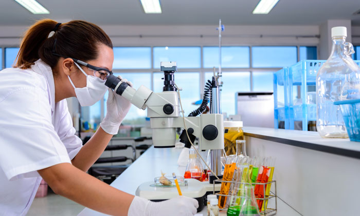

| |
HOME SERVICE EMERGENCY DOCTORS APPOINTMENT ABOUT US CONTACT US |
| |
HOME SERVICE EMERGENCY DOCTORS APPOINTMENT ABOUT US CONTACT US |
|
LABORATORY SERVICES Laboratory Services at Uni Hospital provides complete outpatient clinical laboratory, cytology and surgical pathology testing and reporting. Patients who need lab services may visit any one of our convenient outreach locations, and no appointment is necessary. Our staff will ask for the laboratory orders the patient received from their health care provider. We will collect the specimens needed for diagnostic testing and forward to the Uni Laboratory for assessment. Findings will be sent to the patient’s doctor. Depending on the type of testing performed, results can sometimes be available within 24 hours. Patients can ask their physician about how soon they can expect results and how those results will be communicated to them. |
 |